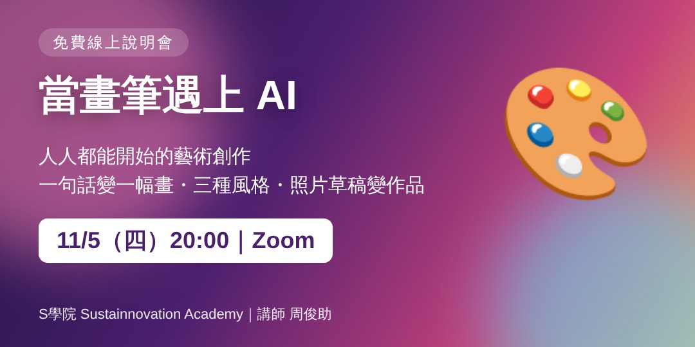
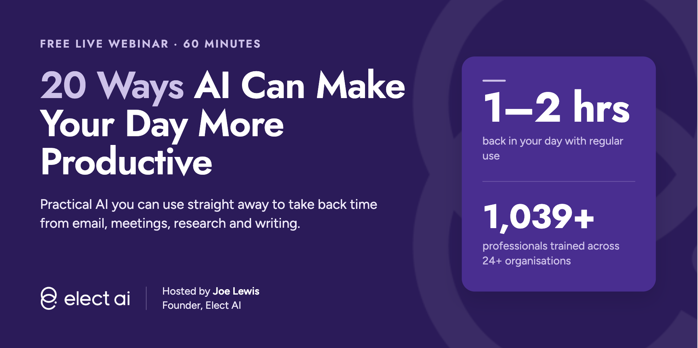
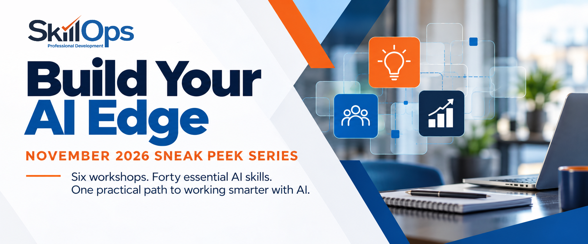
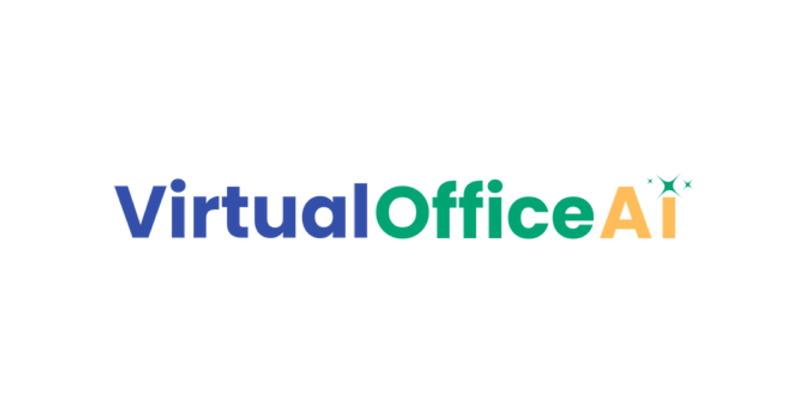
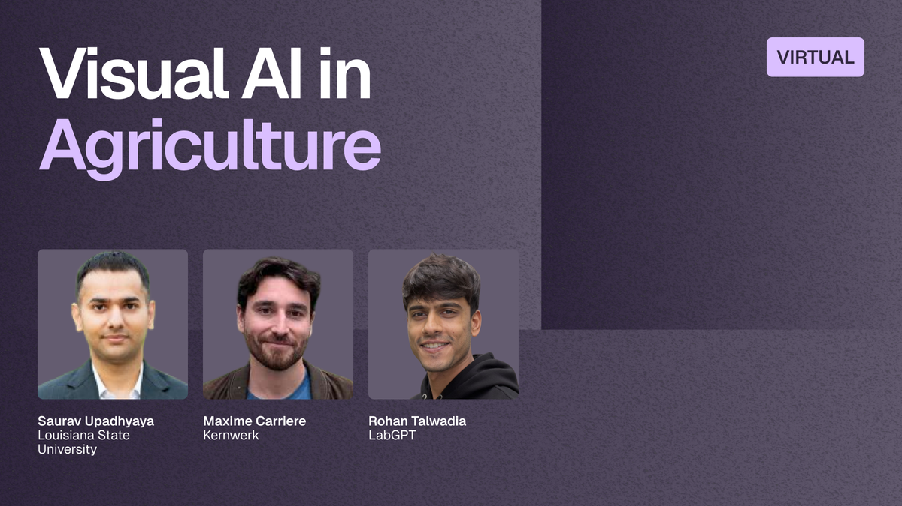

今日舉行
企業 AI 數位轉型：AI Agent 優化成交機會
企業 AI 數位轉型｜如何透過 AI Agent 持續優化，增加成交機會
結合 AI Agent 與行銷數據：客戶購買決策、旅程轉換、內容與 CTA 優化，持續增加有效詢問與成交。
面向企業主／營運／行銷決策者。
官方連結 →
免費 AI 課程卷報 · 復古日刊
今日提要：核實收錄 24 項線上免費 AI 課程／工作坊，其中 14 項於今日舉行（主辦時區；部分換算後為澳門翌日清晨／凌晨），其餘為今日仍可報名或即時開讀嘅自學課。免費＝無需付費即可參加或旁聽；證書或 API 用量或另計，已於卡片註明。公開網址：https://wayneleong-byte.github.io/juanbao/。中文場已跟到 Accupass（四場 isFree=true）；已剔除付費／合資格限制／對象受限之場次。
結合 AI Agent 與行銷數據：客戶購買決策、旅程轉換、內容與 CTA 優化，持續增加有效詢問與成交。
面向企業主／營運／行銷決策者。
官方連結 →AI 裝修效果圖如何與廠商溝通、變成可施工方案，以及有限預算下如何調整落地。
屬裝修媒合平台主辦之 AI 應用講座；可帶 AI 圖提問。
官方連結 →用生活化情境示範 ChatGPT 與 AI Agent 分別，找出可交托嘅重複工作與第一個應用場景。
唔使程式背景；適合一人事業／行政／內容工作者。
官方連結 →
一句話到一幅畫、同一主題三種風格、照片／草稿變成品，並談版權與商用注意。
名額不限；當天由票券頁進入線上活動。
官方連結 →
研究、寫作、收件匣、會議行政等 20 個實務場景；涵蓋 Claude／ChatGPT／Copilot／Gemini 等。
出席後有 recap email；另推介付費 complementary workshop 連結，入場本身免費。
官方連結 →
AI 安全與私隱入門：資料保護、投毒／對抗／提示注入、聯邦學習與負責任部署。
面向學生與 IT／軟件從業員；無需高階技術背景。
官方連結 →
動手提示、評估產出、辨識不可靠結果與負責任使用；Big 4-0 AI Skills Framework 基礎。
互動工作坊；無需技術背景。
官方連結 →現場用 n8n 由零建可運作 AI Agent，示範連線聊天觸發與銷售／回覆場景。
活動會推介付費 Agent J+；入場本身標明免費。
官方連結 →示範 Claude 剪輯流程、現場由毛片到成品，以及增長用 hooks。
Telegram 直播：https://t.me/+MpnSJEZMvqgzYTA1
官方連結 →
白話解釋 AI、與搜尋差異、context 重要性、限制與私隱，並現場訓練 AI 認識你的業務。
出席可獲 Small Business AI Starter Kit。
官方連結 →
第 3 日：實作挑戰簡報、AI 輔助解方示範、回饋與持續學習路徑；優勝者有獎學金名額。
延續 11/3–11/4；連結 2026-11-05 核實仍活（HTTP 200）。
官方連結 →
大豆種子微損傷 U-Net 分割、邊緣野火偵測、無人機取樣與監管可比性等電腦視覺講題。
Meetup 鏡像：https://www.meetup.com/sf-bay-area-ai-meetup-group/events/316768274/
官方連結 →唔使寫 code：現場建行銷助理與 SEO 助理，並學習可重用 skills 指令。
Iowa SBDC 鏡像標 12:00 pm CST（＝1:00 pm EST）。
官方連結 →
第三晚：由第一個專案到第一個 offer、職涯支援與現場 Q&A。
會介紹付費 AI Engineering 課程；入場本身免費。Luma 頁仍顯示活動詳情（HTTP 200）。
官方連結 →
赫爾辛基大學聯同 MinnaLearn 推出嘅免費 AI 素養課，無需複雜數學或編程；另有 Building AI 進階篇。
2026-11-05 重新核實連結仍活（HTTP 200）。
官方連結 →
解釋生成式 AI 是什麼、點用、同傳統 ML 分別，並介紹 Google 工具；可賺技能徽章。
2026-11-05 重新核實 536FREE 頁仍活。
官方連結 →
Google 實務 ML 入門：動畫、互動可視化與練習；涵蓋回歸、分類、神經網絡、LLM 簡介與公平性等。
2026-11-05 重新核實連結仍活。
官方連結 →
用 Transformers、Datasets、Tokenizers、Accelerate 學 LLM／NLP；Colab 可跑程式。需良好 Python。
2026-11-05 重新核實連結仍活。
官方連結 →
由 Agent 基礎到 smolagents、LlamaIndex、LangGraph；可 audit 或做作業攞免費證書。需基礎 Python 與 LLM 概念。
2026-11-05 重新核實連結仍活。
官方連結 →涵蓋職場應用、Build with AI、領導採用、教學應用等軌道；通過評核可攞 badge（非正式認證）。
2026-11-05 重新核實連結仍活。
官方連結 →
由第一次對話、提示、Projects／Artifacts／Skills，到 Connectors 與角色應用；Academy 整體標明免費。
2026-11-05 重新核實連結仍活。
官方連結 →
概念課＋實作課；建議有 Python／TypeScript 基礎。內容免費；呼叫雲端模型 API 可能產生費用，可用本地模型。
2026-11-05 重新核實連結仍活。
官方連結 →
Jeremy Howard 主講，面向有編程經驗者；PyTorch／fastai／Hugging Face，可用免費雲端資源。配套書亦免費網上可讀。
2026-11-05 重新核實連結仍活。
官方連結 →
完全免費：AI 演進、醫療決策、影像辨識、語言模型、可信／公平／可解釋性。不限身分。
2026-11-05 重新核實連結仍活（HTTP 200）。
官方連結 →